We are two Venezuelans condemned to tell stories remotely. Servants of the one below, spreading hopelessness through games.
Hope: A Sky Full of Ghosts is a sci-fi point and click adventure where you captain a disjointed crew on a stolen spaceship in the hopes of surviving NexxusCorp's tyranny.
Your decisions and wits will decide the course of the mission, your relationship to the crew and your survival.
It's a blend between the spirit of old school point and cliks and a deep narrative full of character and secrets with a minimalist and striking art style.
As the titular character and Captain, Agatha Hope, it's your responsibility to unite a group of self-interested individuals, to explore an unfamiliar spaceship and survive.
To do that, you first will need a ship. And lucky for you, NexxusCorp has a prototype ready for the taking.
Your mission is to infiltrate NexxusCorp's lunar complex, kidnap seize Dr. Mariko Nishimura and steal acquire the starship Dragon X13.
Then set course to Proxima B, where another group of free humans is waiting for you.
To survive, you will talk your way out of trouble, and when that fails, use your wits to solve puzzles, and take advantage of 22nd century tools to breach experimental technology.
hope, sci-fi, point & click, adventure, 2d, vector graphics, episodic, singleplayer, choices matter, female protagonist, dystopian, story rich
Download a total of 16 screenshots (1422x800) as a .zip file (3.6 MB)
Or grab a few from here:
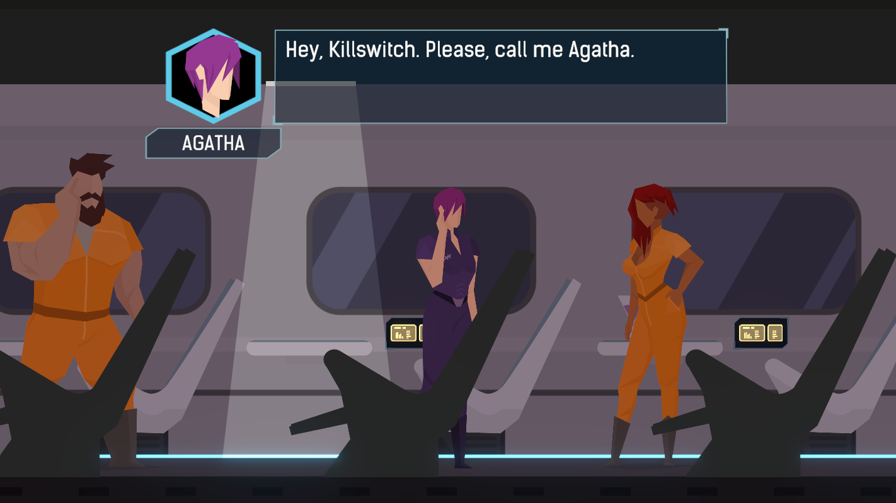
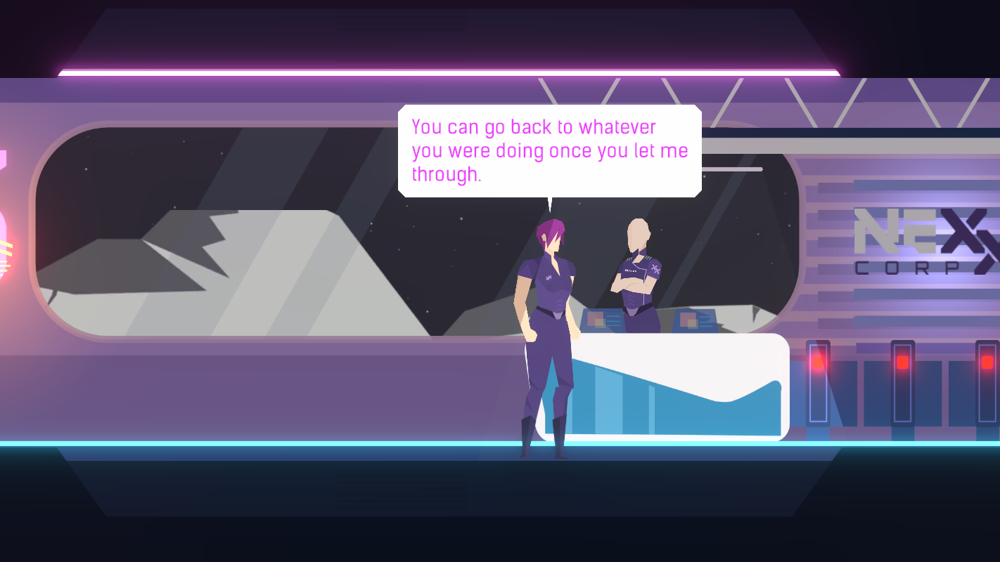
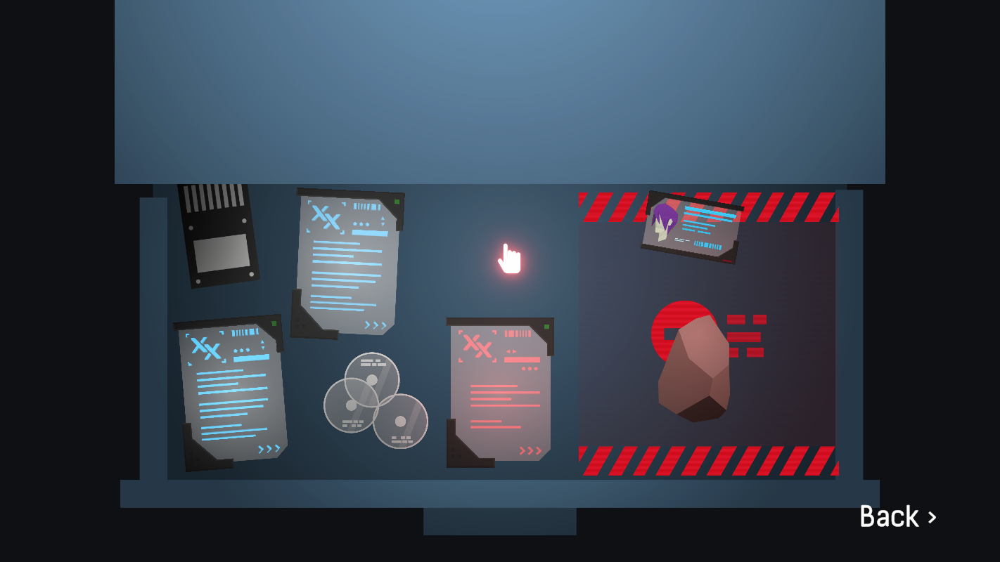
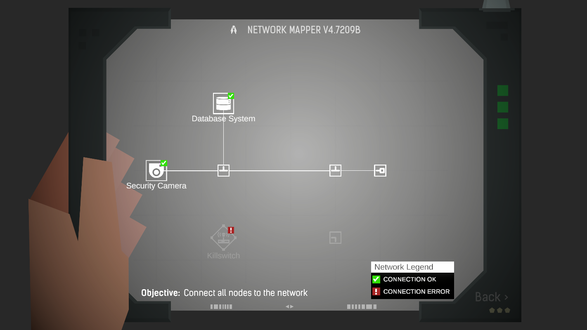
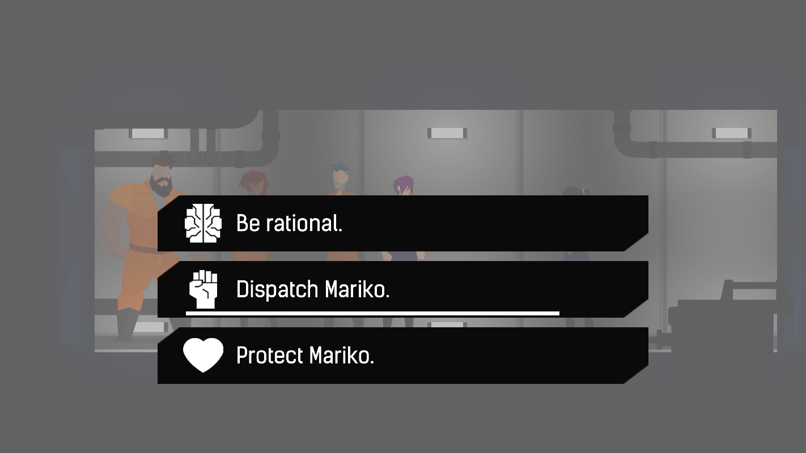
There are far more images available for Hope: A Sky Full of Ghosts! If you have specific requests, please reach out to us and we'll be more than happy to help.
Joined the Cicadas after her family was killed by NexxusCorp. Agatha Hope has been one of the most influential figures within the resistance since then. Her tenacity and determination to bring NexxusCorp down along with her team-first approach make her the perfect fit to command the infiltration to Luna 3 and consolidate a disjointed team in such a crucial mission.
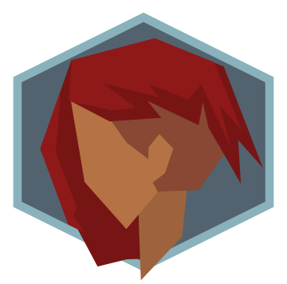
Dagher is one of the first cyber-medicine specialists to join the Cicadas. She recruited Agatha Hope after the Day of the Collapse and the two have been been working together since then. She focuses on genetics and cybernetic enhancements but has training in tactical stealth and threat mitigation. Her expertise is key to maintain the wellness of the crew in a foreign planet and assist Hope in case threats arise.
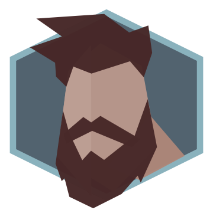
Rodriguez is the product of an experimental program called Human Bio-Enhancement and ran by the Latin American Socialist Union. Through genetic-only alterations his physical and cognitive capabilities were augmented and could compete with some of the most advanced cybernetic implants. Rodriguez has completed dozens of missions with an impecable success rate, his tactical and engineering knowledge will be key for the infiltration and to establish a self-sustainable energy plant in the new settlement.
Backman was a computer genius working for NexxusCorp until Rodriguez recruited him as a double agent working for the Cicadas. He has leaked zettabytes of classified data to plan the infiltration. He also worked on the Operating System (AEROS) that will be installed in the spaceship and his expertise will be key to maintain all the computer systems in space and in the planetary settlement.
Nishimura is one of the most renowned terraformists working for NexxusCorp. She has implemented multiple autonomous systems across the Luna complex, delivering exceptional levels of resillience, efficiency and performance. She has been targeted by the Cicadas as an essential asset for the success of the Titan mission, so Hope and her crew must seize her during the infiltration and procure her collaboration once they are in route.
Below are a few assets but you can download the whole package with our all of our logo assets and other icons in different variations as a .zip file (2.7 MB)
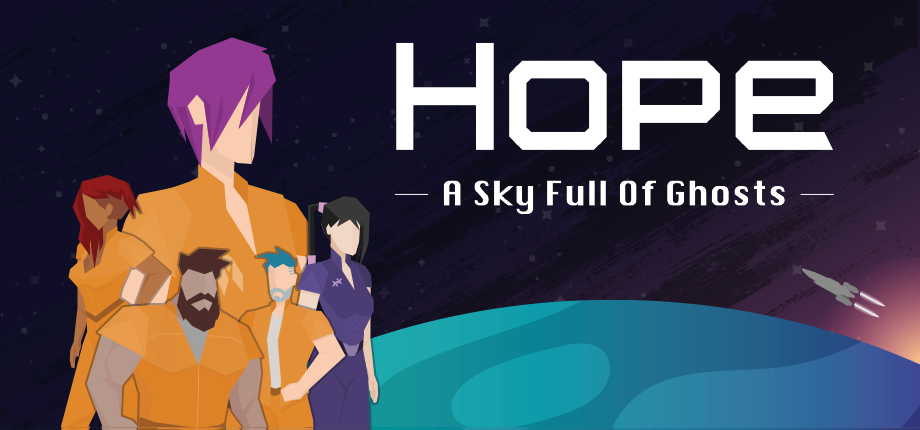
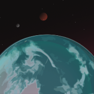
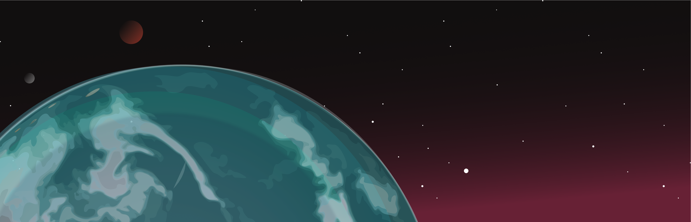
Play our demo on Steam: https://store.steampowered.com/app/3072180/Hope_A_Sky_Full_of_Ghosts?utm_source=PressKit.